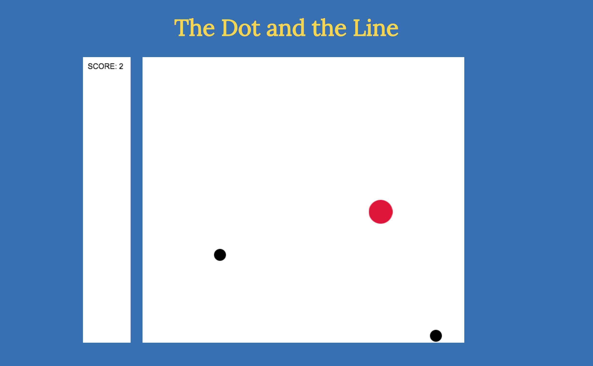
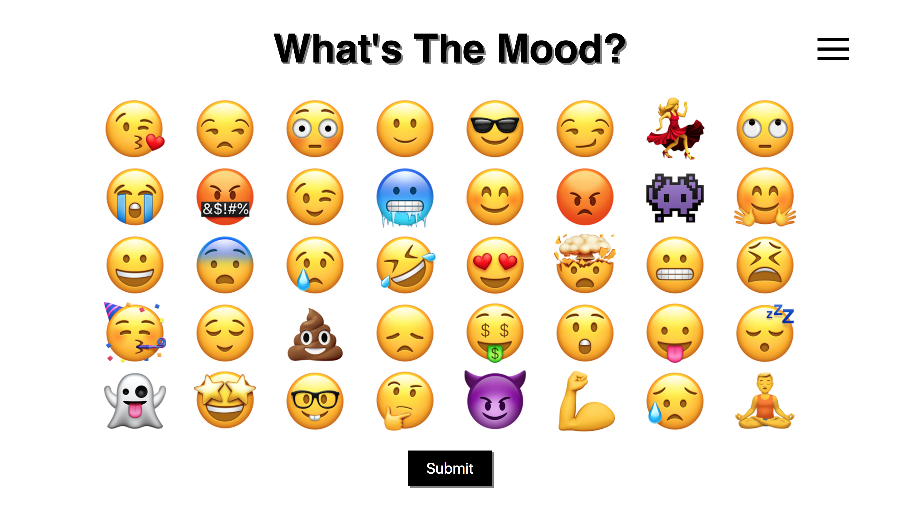

The Dot and the Line
A multi-level JavaScript game built with Phaser 2. Built as an accompaniment to the book by Norman Juster and the 1965 MGM animated short.

Feelng
An emoji-based mood generator

Super Smash Academy
An education-focused adminstrative app with a vaporwave twist

Olivia's Bakery
A bakery website built with Sinatra and featuring JavaScript and CSS animations